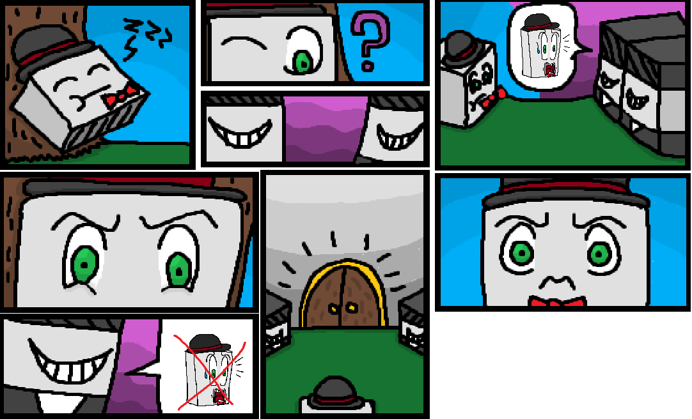
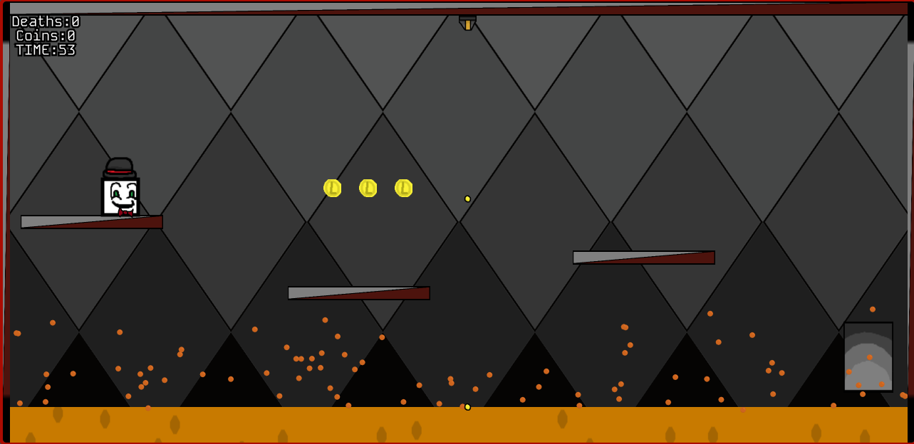
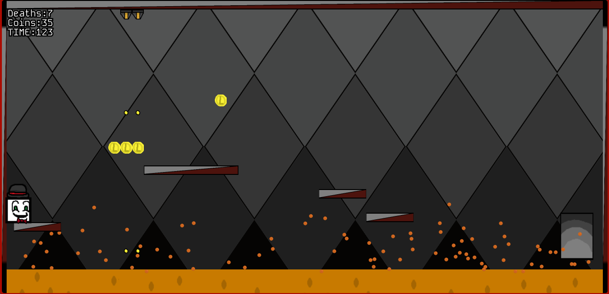

Description:
Crumbled Away is an platformer, where the player has to maneuver through trials to make them look like they aren't an chicken. Goodluck.



Post Note: This game was created for an school assignment where I had to create an game from scratch within P5.js. Which was actually nice to work with.
Even if my team mate didn't go through entirely, I am still grateful that they atleast tried to work through it, goodluck Joey.